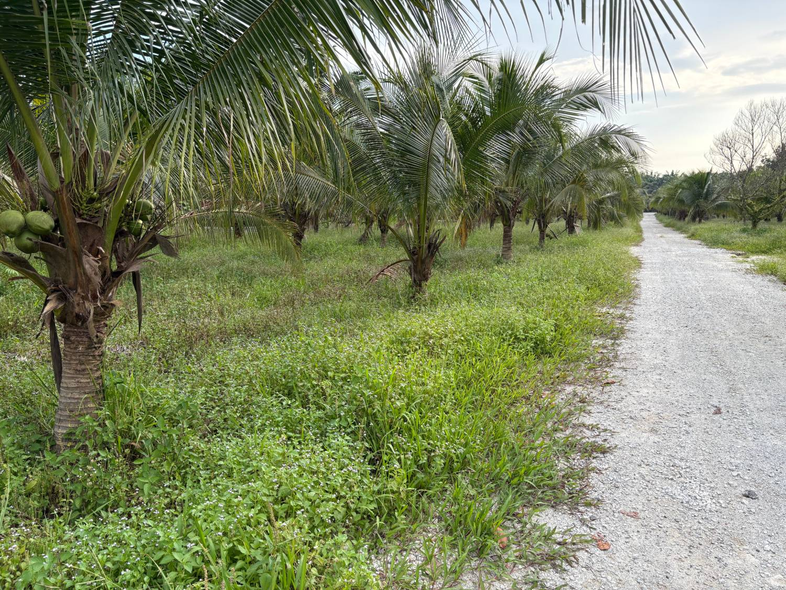
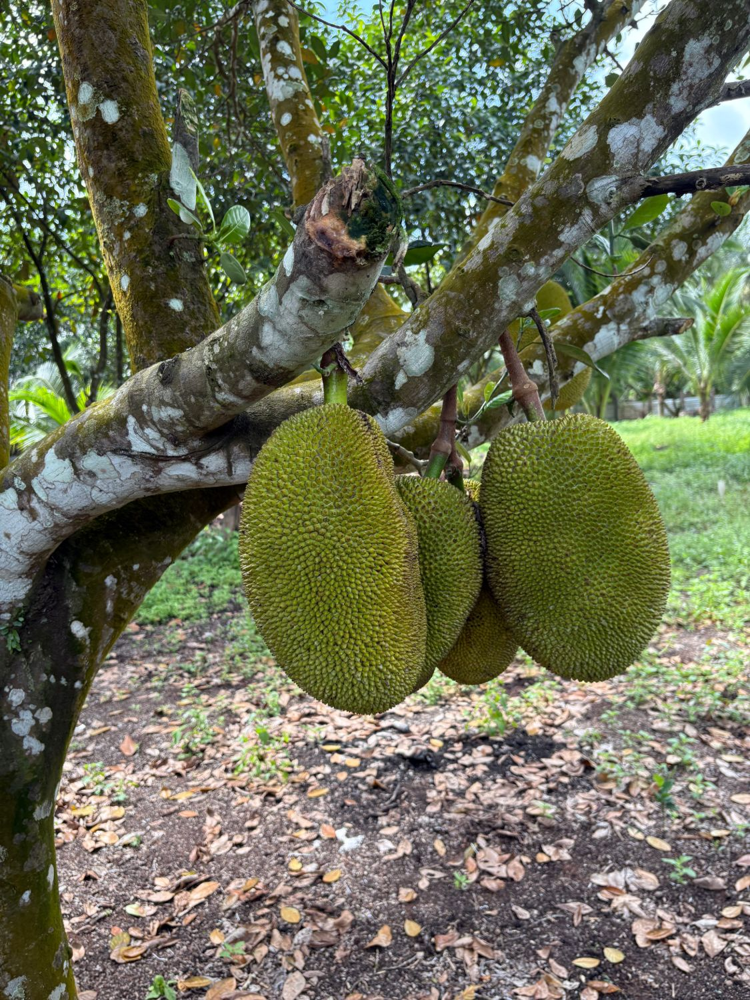

What We Grow

🥥 Coconut (Kelapa) — Main Crop
⭐ Our SignatureThe heart of our farm. Rows of towering coconut palms stretch across our Jeram Batu land. We harvest fresh coconuts for drinking, cooking oil, santan (coconut milk), and desserts. Available year-round in bulk for traders, restaurants, and factories.

Jackfruit (Nangka)
Year-roundOur prized nangka, grown right here on the farm. Enormous, sweet, and full of flavour — eaten fresh, cooked as a savoury dish, or made into traditional Malay desserts.

Guava (Jambu Batu)
Year-roundOur signature crop. Crisp, fragrant, and loaded with Vitamin C. Available in both white and pink flesh varieties. Great eaten fresh, juiced, or made into jam.

Mango (Mangga)
May – AugustGolden, fibre-rich mangoes with a sweet, tropical aroma. We grow several local varieties including Harumanis and Chok Anan — perfect for eating fresh or blending into smoothies.

Banana (Pisang)
Year-roundHarvested daily from our mature banana groves. We grow Pisang Berangan, Pisang Raja, and Pisang Emas — each with its own unique sweetness and texture.

Pineapple (Nanas)
March – OctoberTangy and refreshing with a bright yellow flesh. Our pineapples are grown in well-drained sandy loam and picked only when fully ripe for maximum sweetness.

Watermelon (Tembikai)
April – SeptemberJuicy, cool, and naturally sweet. Our watermelons are grown under open sky and are a favourite for family gatherings and festive occasions.

Papaya (Betik)
Year-roundSmooth, buttery, and rich in digestive enzymes. Our papayas are picked fresh every morning and are ideal for breakfast or tropical fruit salads.

Calamansi (Limau Kasturi)
Year-roundSmall but mighty. These zesty citrus gems are a staple in Malaysian cuisine — squeezed over rice dishes, stirred into drinks, or used in marinades.

Starfruit (Belimbing)
June – DecemberUnique five-pointed cross-section and a refreshing sweet-sour taste. Eaten fresh, made into juice, or preserved as a condiment alongside local dishes.